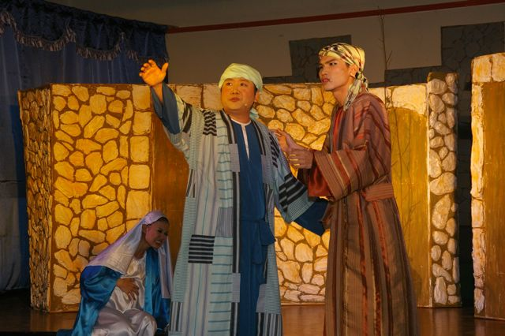
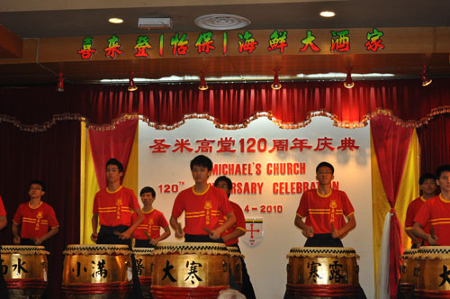
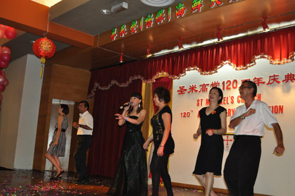
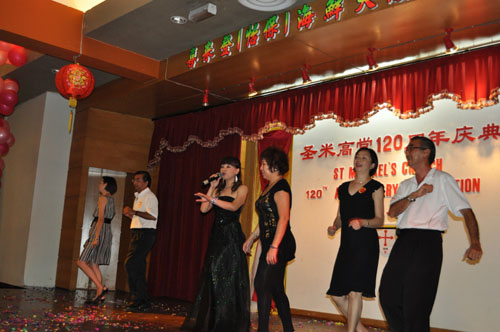

Christmas Musical - 15th to 17th December 2010
The parish's Chinese Apostolate staged a Christmas Musical on 15th, 16th and 17th of December 2010. Parishioners and students were treated to a beautifully executed play on the Nativity story interwoven with a take on how the absence of Christ in our life can lead to an empty and somewhat dysfunctional modern family life. The performers portrayed their parts brilliantly and the costume design was most impressive. Congratulations to the Chinese Apostolate on a job well done!

PHDC Jumble Sale - 12th December 2010
A jumble sale was organised by the PHDC of St. Michael in aid of the Mother Theresa Reading Shelter in Buntong. Quality bags, shirts, books, magazines and knick-knacks were in abundance for sale at marked down rates. Golf and handbags at RM5.00 and classic comics like Calvin & Hobbes were a steal at only RM6 to RM10.00 each. The jumble sale raised approximately RM4,063.00 which was inclusive of a generous donation from a private donor. All proceeds will be channelled directly to the Shelter.
Seoul Metropolitan Women's Choir Performance - 21st November 2010
Parishioners arriving early for the parish assembly were pleasantly surprised with a performance by the award winning Seoul Metropolitan Women's choir from Korea. The choir who were on tour, generously consented to giving their beautiful half-hour performance on an invitation from a member of the Parish Pastoral Council. Fr. Stephen Liew subsequently presented each member of the group with the parish's pewter keychains as a token of appreciation from the parish.
Parish Assembly - 21st November 2010
The parish assembly began at 2.30p.m. with an address from PPC Chairman Francis Fernandes, followed by an opening prayer in Mandarin by Josephine Lim from the Chinese Apostolate. Fr. Liew began his address by referring to the results of the review by the Peninsular Malaysia Pastoral Assembly in August 2010. The assembly stressed on the importance of family life and BECs. There will be one Parish event and one BEC event for 2011. Fr. Liew emphasised that family life and BEC needed to be strengthened and re-emphasised as human relations seem to have been diminished in this modern age of hypermarkets, condo living and other modern "advancements". He proposed that all families have one meal together (i.e. with all family members present together at table) at least once a month. It was also decided that an inter-ministry/BEC Telematch be the Parish Event for 2011 while the BECs will hold a BEC fellowship in every BEC area simultaneously on a particular date to be decided upon later.
Farewell to Fr. Michael Cheah - 24th October 2010
Parishioners bid a fond farewell to Fr. Michael Cheah on 24th October 2010. All choirs paid tribute to Fr. Cheah with their specially rehearsed songs at the end of each mass. Parishioners and well-wishers packed the Sun Lee How Fook restaurant for the lunch held in his honour, on the same day. Friends from OLOL, OMPH and as far as Batu Gajah and Sitiawan were also present at the lunch to say good-bye to Fr. Cheah. A slideshow detailing Fr. Cheah's almost six year tenure in St Michael's church, was also shown during the lunch. A visibly moved Fr. Cheah thanked all present for the co-operation and fellowship shown throughout the years and hoped that the Parish would keep up this spirit of unity and faithfulness in all years to come.
120 Years Anniversary Feast Day Mass - 2nd October 2010
Parishioners celebrated St Michael's Feast Day this year with the theme "120 years of Faithfulness" in conjunction with the Parish's 120 Years anniversary.The mass was celebrated by His Lordship Bishop Antony Selvanayagam, together with our Parish Priests Fr. Michael Cheah and Fr. Anthony Chong. Storm clouds and thunder which loomed threateningly in the late afternoon miraculously disappeared by the time mass started at 6.15p.m.
The Ministry to the Poor was on hand to sell candles for the occasion and St Michael almond macaroons (cookies) specially baked for the occasion were also sold. Proceeds of these St Michael almond macaroons benefited the Good Shepherd Sisters. The procession through Ipoh town went well thanks to fine weather and excellent assistance of dilligent hospitality ministers, RELA and police personnel.
The Parish also takes a moment here to express grateful thanks to the visiting priests,Fr. Francis Xavier Selvarajoo, Fr. Martin Then and Fr. Victor Louis for their inspiring sermons on the theme of "Faith, Hope and Charity" during the Triduum masses held on the three nights preceeding St Michael's Feast Day. Click on the pictures below for some scenes from the Feast Day. (Larger view of selected picture will open in a separate window).

Launching of Catholic Business Directory - 5th Sept.2010
The Catholic Business Directory was officially launched by Fr Michael Cheah on 5th September 2010. The directory lists a variety of goods and services offered by Catholic and Christian businesses in Kinta Valley. Proprietors who would like to list their businesses can still submit their details and payments to the parish office for listing in the upcoming second edition of the directory. Details should be submitted using the form which can be found in the present directory.Anyone who wish to list their businesses in the second edition of the directory must submit their payment and form to the Parish Office by 31st October 2010.

Blood Donation Campaign - 22nd Aug. 2010
Annual Blood Donation Campaign was organised by the Chinese Apostolate.A big "Thank You" to all parishioners who donated to this worthy cause.
Marriage Encounter Asian Conference Mass - 28th Aug. 2010
Marriage Encounter (ME) delegates from twelve Asian countries converged together for the Marriage Encounter Asian Conference Mass celebrated by Bishop Antony Selvanayagam in St Michael's Church Ipoh on 28th August,2010. The mass was held here to mark the conclusion of the 35th Asian Marriage Encounter Conference held in Bukit Mertajam.
St. Michael's Church Family Day - 8th Aug. 2010
120 Years Anniversary Baking Competition - June 2010
- Winners of the Baking competition:
- 1st Prize : Almond Macaroons by Lucy Lam
- 2nd Prize : St Michaelmas buns by Nikika Parlanti
- 3rd Prize : Audrey's Chicken Pie by Audrey Chee
- 4th Prize : Banana Delight Cupcake by Karen Leong
120 Years Aniversary Parish Dinner - April 2010

 

Lenten Campaign 2010
Total donations as at 19th April 2010, received from St Michael's parishioners for this year's Penang diocesan Lenten Campaign amounted to RM26,641.00. Our Parish Human Development Committee (PHDC) simultaneously organised a "My Lenten Campaign Pledge" for the season of Lent and collected another RM4,252.00 in donations which benefited organisations in Ipoh namely the Mother Theresa reading shelter, Pelita Home, Yayasan Latihan Insan Istimewa dan Persatuan Kebajikan Orang Kurang Upaya.